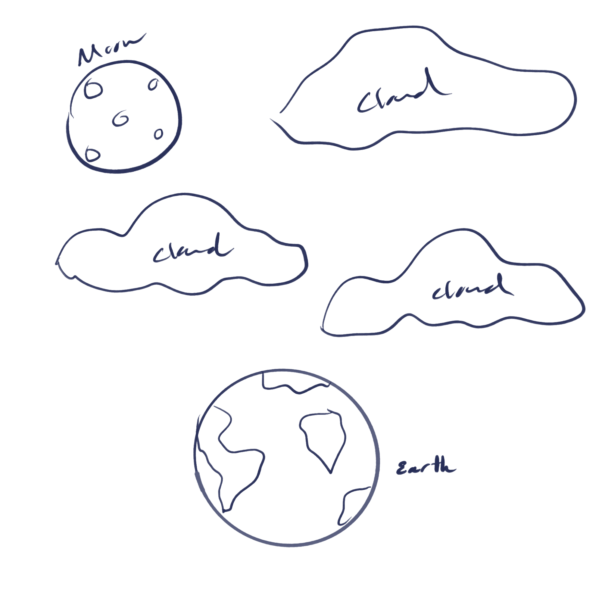
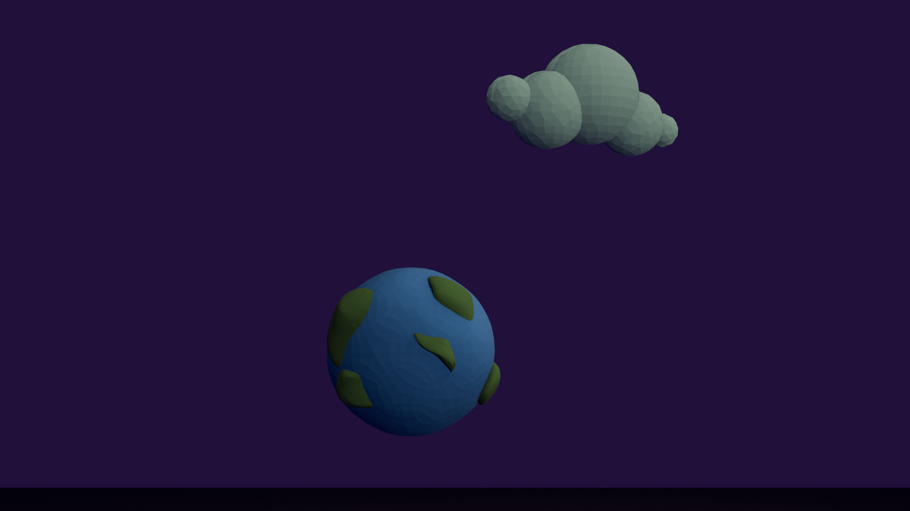
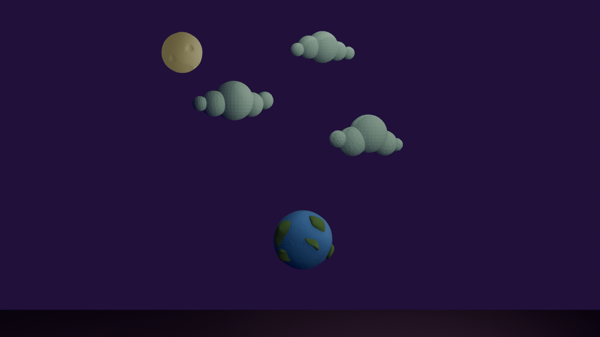
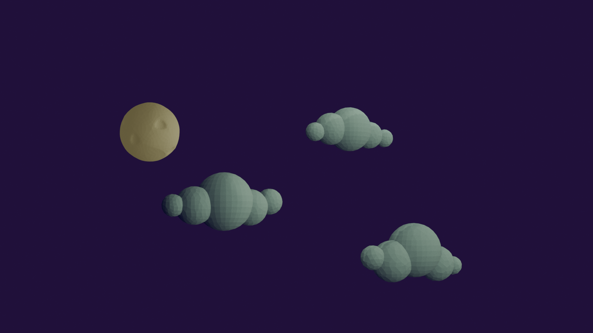

Low Poly Night Sky Scene
Ideation
My idea was to create a clam and dreamy low poly night sky scene featuring a moon, earth, and cumulus clouds.
I wanted each object to feel simple but expressive, inspired by minimalist art styles often seen in ambient animation.
I started sketching quick shapes to explore my idea.

Process
I used blender to model and render the scene. I have practiced basics of low-poly modeling, materials, and lighting while learning the logic of 3D design for the first time.
Clouds:
- Used multiple Icospheres, scaled them in different sizes, and arranged them
- Joined them together using Ctrl + J.
- Applied a light blue material and used shade flat for a low-poly look.
Moon:
- Added a single Icosphere (subdivision = 2).
- Used extrude inward to create subtle crater textures.
- Applied a soft yellow/beige material for a dusty and lunar look.
Earth:
- Added one icosphere for the ocean, and another smaller ones for the continents.
- Used proportional editing to lift land areas for continents.
- Colored ocean blue and land green.
- Positioned below the clouds and moon for composition balance.
Final Renders
- A close-up of the earth and a cloud
- A wide shot showing entire scene
- A close-up of the moon and clouds
Image 1
Image 2 
Image 3